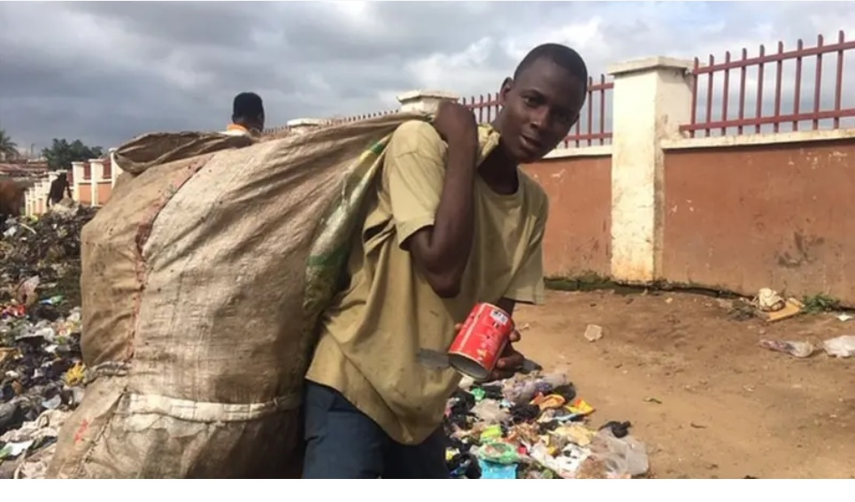

Hero Spotlight
Ajiun – Flood Relief Teacher

Mary volunteered during the 2022 flood in Ajanlekoko State, teaching displaced children daily in a makeshift classroom. Her dedication gave hope when it was needed most.
Kunle Ade – Local Waste Recycler
Kunle started a recycling initiative in his neighborhood, collecting over 10,000 plastic bottles and educating youth about environmental responsibility.